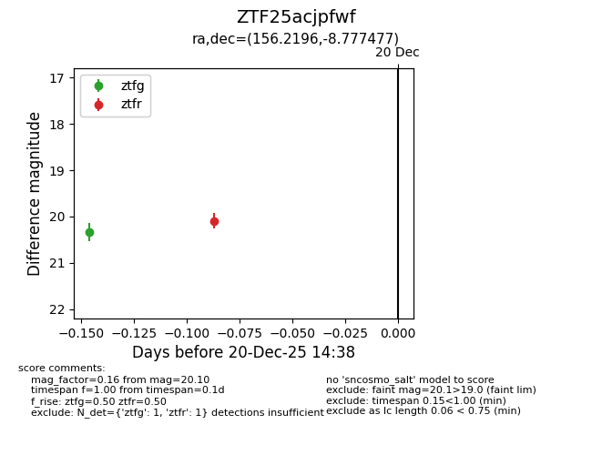
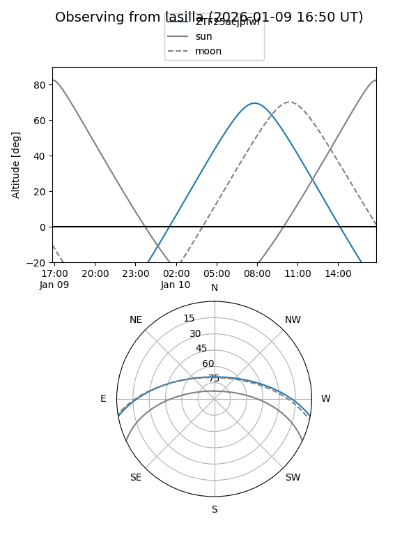
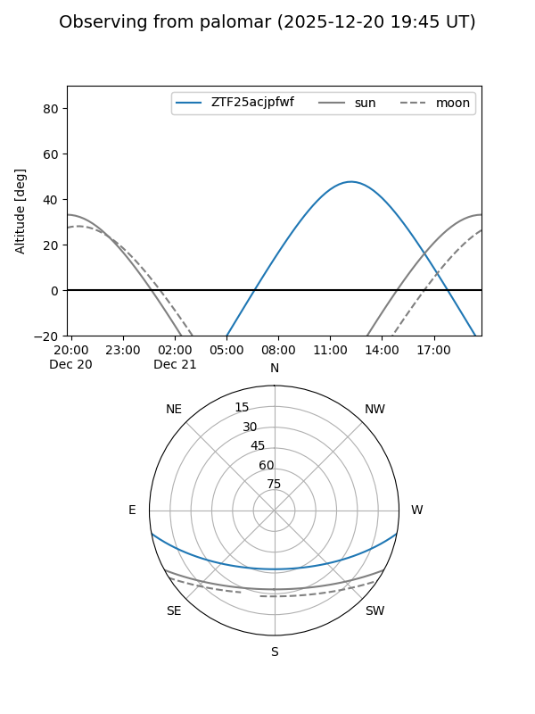

ZTF25acjpfwf
Target ZTF25acjpfwf at 2025-12-31 18:00
Aliases and brokers:
FINK: link
Lasair: link
ALeRCE: link
alt names
ZTF25acjpfwf (ztf,fink_ztf)
Coordinates:
equatorial (ra, dec) = 156.2196,-8.77748
equatorial (HMS+DMS) = 10:24:52.71,-08:46:38.92
galactic (l, b) = (253.0748,+39.50779)
Flags:
Photometry:
last ztfg=20.33, ztfr=20.10
1 ztfg, 1 ztfr detections
Lightcurve

Visibility


Additional plots